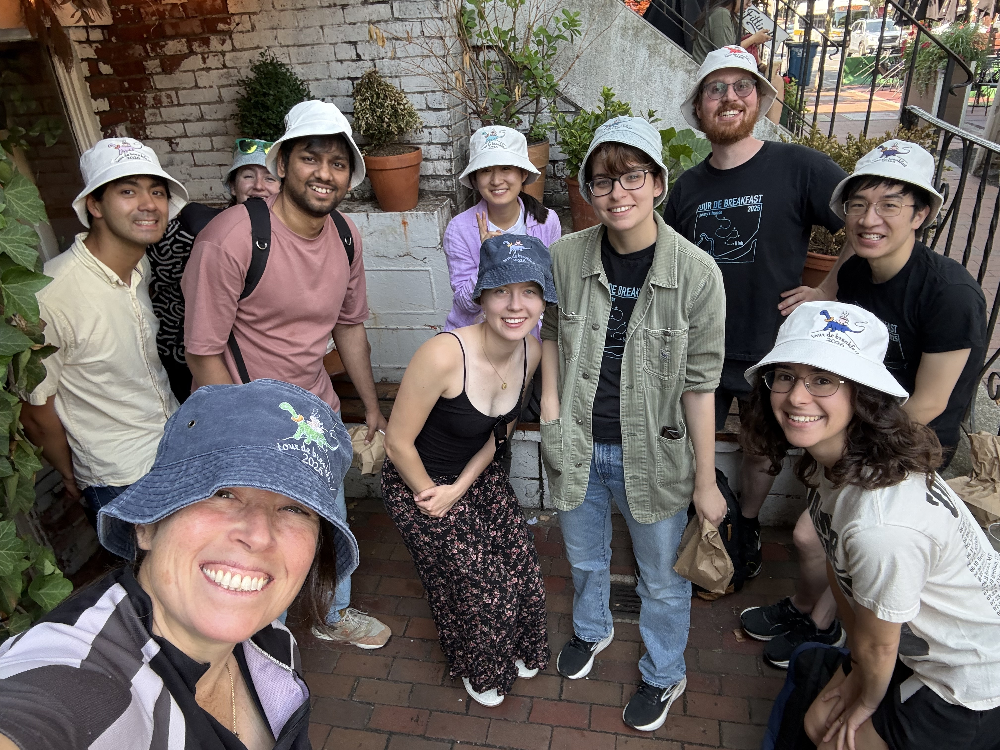

June 29, 2026
Fourth annual Tour de Breakfast
A walking tour of all of the best brunch spots that Cambridge has to offer. Or at least those easily reachable from Broadway. Check out our matching hats!